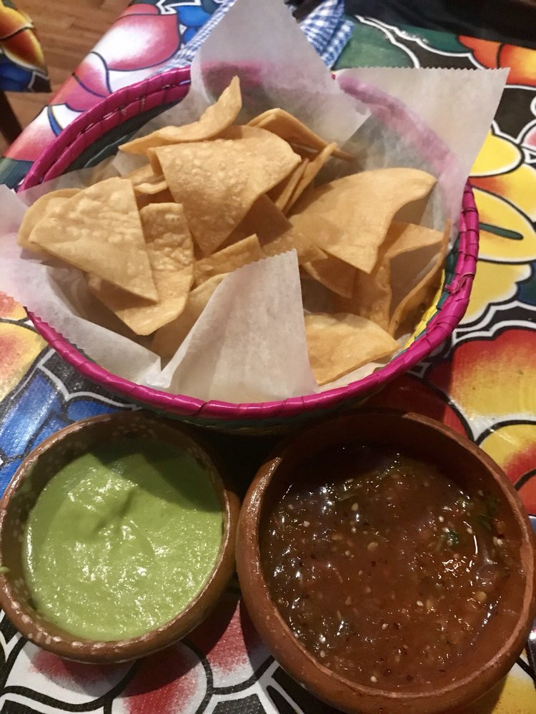

Charritos
The chips were delicious and the fries on the dish were fresh and good in terms of quality. I would recommend this place because this chips were really good. The chips were very crisp, and the salsa was very salsy, however there was a lack of gua in the ‘amole.